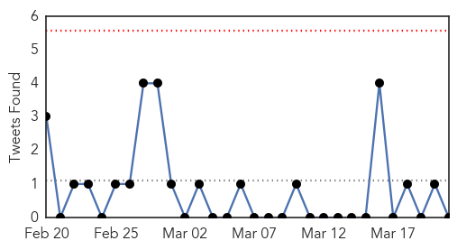

Influenza
30-Day Web Trend
0 alerts, 0 warnings

30-Day Twitter Trend
0 alerts, 0 warnings

Article Locations
Article Confidences
Top Articles:
- 0.751
- March 20, 2015 Archives
- 0.751
- March 20, 2015 Archives
- 0.751
- March 20, 2015 Archives
- 0.576
- Conscious Evolution TV
Top Tweets:
-
No tweets found for Mar 21, 2015
Unknown
30-Day Web Trend
1 alerts, 0 warnings

30-Day Twitter Trend
0 alerts, 0 warnings

Article Locations
Article Confidences
Top Articles:
- 0.948
- Brazos County Health Department Seeing New Surge in Flu Cases
- 0.917
- Chicago Tribune
- 0.917
- Chicago Tribune
- 0.917
- Chicago Tribune
- 0.917
- Chicago Tribune
- 0.917
- Chicago Tribune
- 0.917
- Chicago Tribune
- 0.917
- Chicago Tribune
- 0.910
- The world windows to Thailand
- 0.895
- HIV outbreak spreading fast across southern Indiana
- 0.893
- Kampala water safe – Govt
- 0.843
- Decline in U.S. Tuberculosis Rates Slows: CDC
- 0.824
- Bug outbreak at two hospitals in Fife
- 0.815
- Polluted drinking water, a serious threat to public health
- 0.801
- Antioch senior residence outbreak blamed on norovirus
- 0.770
- Sudan Vision Daily
- 0.737
- Headlines, News, The Philippine Star
- 0.728
- 3 cases reported in HK of patients with worm in eye
- 0.721
- Archives > News > Concerns on TB case addressed at Franklin High
- 0.713
- WHO: Together we can beat TB
- 0.710
- Edmonton: une mère cache GHB, crystal meth et crack dans la poussette de son bébé
- 0.707
- Linking the World to deliver LifeStraw® Community water purifiers to support disaster relief efforts in Vanuatu
- 0.692
- OUR OPINION: School outbreak response points out CDC's value
- 0.690
- Wireless Sensors Help Scientists Map Staph Spread Inside Hospital
- 0.603
- Innocent victims of TB in vulnerable communities
- 0.601
- Zayed University conducts health screening for new students
- 0.584
- 3 late-stage patients in GenSan die
- 0.578
- Speaker: Too little effort is being made to thwart Alzheimer's
- 0.525
- Chagos: le verdict qui a tout changé
- 0.517
- Lack of awareness blamed for high TB fatalities
- 0.504
- Medical knowledge exchange
Top Tweets:
- 0.614
- RT: "Si yo no hubiera nacido en la tierra en que nací, estuviera arrepentido de no haber nacido aquí”. -Rafael Hernández htt…
- 0.515
- (Tuit anterior) El humo es un irritante natural de estos tejidos; se disminuye la capacidad de oxigenificar la sangre que va al corazón.